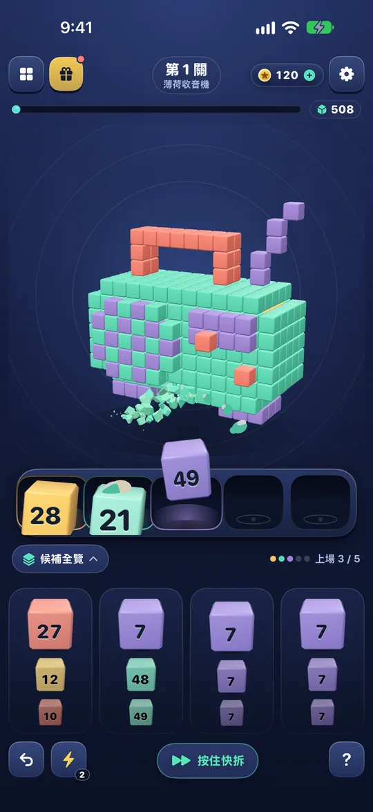
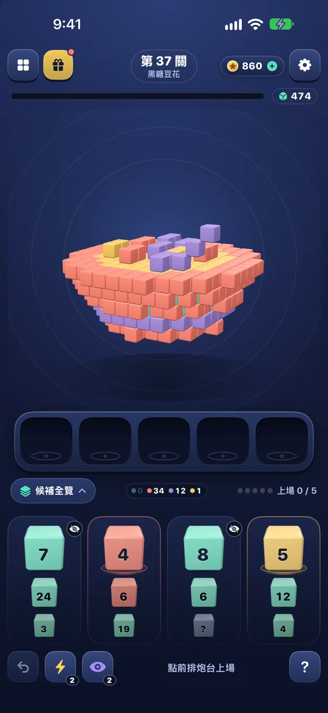
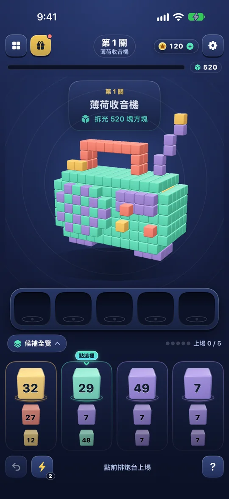
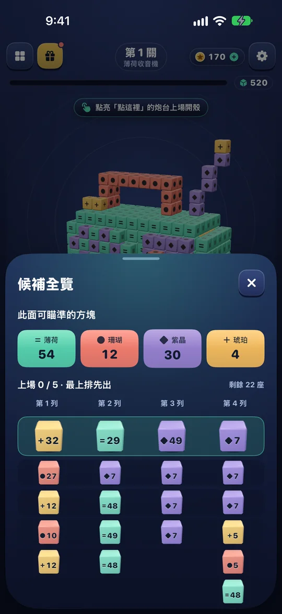
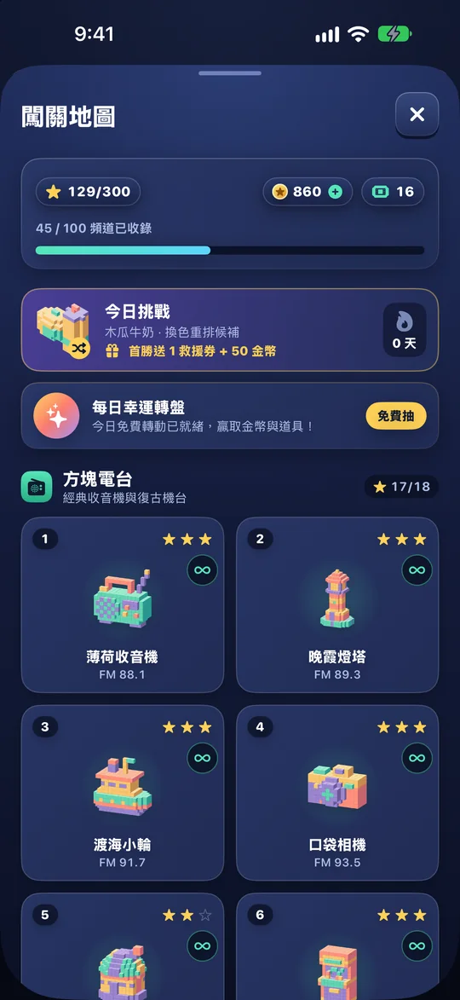

規則 1 四列候補・五格上場
從四列隊首挑選炮台跳上場，最多同時佔住五個格位。炮台只射擊「同色且目前角度看得見」的外露方塊，彈量歸零才會退場空位。
從四列候補派遣顏色炮台進入五個上場格，轉動 3D 立體模型露出目標方塊、打開外殼再清光內芯。收錄 17 章 100 關，帶你從復古收音機一路玩到臺灣夜市小籠包、雞排、黑糖豆花與玉山主峰。


每一發子彈都有獨立飛行彈道與碎裂音效，考驗你安排顏色順序與旋轉判斷外殼層次的策略。
從四列隊首挑選炮台跳上場，最多同時佔住五個格位。炮台只射擊「同色且目前角度看得見」的外露方塊，彈量歸零才會退場空位。
打不到目標時可單指拖動旋轉 3D 模型（支援瑞士錶冠級 60 齒細微震動與自動轉面），或點「候補全覽」暫停觀察後方隊伍，別急著派沒目標的炮。
第九關起出現前排翻面揭曉的「問號炮台」，第十三關加入須兩格並進的「鏈結炮台」；卡關也能動用穿透雷射、透視鏡、免費撤回或第 6 救援格。
統一午夜街機視覺設計，支援 iPhone 120Hz 原生起跳動畫與 iPad 橫向大舞台，並內建色覺相同幾何符號輔助。



全戰役 100 關與每日換色重排挑戰皆經過模擬器逐關驗證存在無道具免費三星路線，難度隨「困難關卡」節奏起伏。
| 章節區間 | 主題群組 | 代表立體模型關卡 |
|---|---|---|
| 第 1–5 章（第 1–30 關） | 電台序曲與經典造型 | 薄荷收音機、晚霞燈塔、渡海小輪、復古留聲機、糖果扭蛋機、星空放送塔 |
| 第 6–9 章（第 31–54 關） | 夜市吃喝與庶民小點 | 小籠包、大雞排、黑糖豆花、臺南牛肉湯、珍奶、蔥抓餅、古早味紅茶冰 |
| 第 10–13 章（第 55–78 關） | 廟埕文化與城市日常 | 紅磚香爐、平溪天燈、布袋戲偶、臺北捷運、便利商店、夜市撈金魚 |
| 第 14–17 章（第 79–100 關） | 寶島風土與自然巔峰 | 臺灣黑熊、關廟鳳梨、墾丁燈塔沙灘、阿里山小火車、玉山主峰、101 跨年煙火 |
為保護使用者與開發者隱私，我們不公開客服信箱，所有問題回報皆集中於官方 GitHub Issues 公開追蹤：
玩家從下方四列候補的隊首挑選炮台進入最多五個上場格。每座炮台只會攻擊目前旋轉視角看得到且同色的外露方塊，每發消去一顆，打完彈量才會退場空出格位。遇到背面方塊時可拖動旋轉模型（預設卡格時亦支援自動轉面），或打開「候補全覽」查看全隊順序。
可以。全部 100 關卡與每日挑戰皆經過無道具免費三星路線驗證，不需網路與帳號即可完整遊玩。卡關時可使用免費撤回與重試，獎勵廣告僅供玩家自選額外救場或加倍金幣。
共收錄 17 章 100 關（合計 300 顆星）。前五章為電台、燈塔與夜市懷舊機台，第 6 至 17 章為臺灣吃喝玩樂巡禮，包含小籠包、大雞排、珍珠奶茶、黑糖豆花、芒果冰、紅磚香爐、布袋戲偶、藍鵲、捷運列車、墾丁海灘、玉山主峰與跨年煙火。
「工作室通行證」與「新手啟航禮包」皆屬買斷商品。使用同一個 Apple ID 重新安裝後，點右上角齒輪進入「工作室設定」，點選「回復購買」即可恢復；消耗型救援券與金幣則儲存在本機裝置上，退款需透過 Apple reportaproblem.apple.com 申請。
請至官方 GitHub 問題回報頁 留言，並附上裝置型號、iOS 版本、關卡編號與操作狀況，開發者會盡快協助排查。